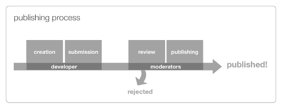
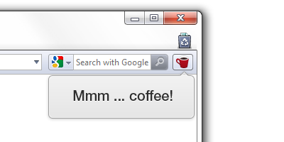

Opera extensions: publishing guidelines
From Opera 15 onward, Opera 11 & 12’s extension format is no longer supported, and instead, we’ve switched to Chromium’s extension model. Check out our new documentation for developing extensions for Opera 15 and higher and start building your own extensions.
Table of Contents
- Introduction
- Create your extension
- Prepare your details before submission
- Submit your extension for review
- Your extension is reviewed
- When the extension satisfies all criteria, it will be published
Introduction

Figure 1: Overview of the publishing process - the developer creates an extension and submits it to the Opera extensions repository. The extension moderators then test the extension and publish it, or reject it and send it back to the developer to work on it more and submit it again.
This guide explains how to publish your extension, which is a multi-step process that begins when you submit your extension for review. We want published Opera extensions to be of a consistently high quality, so we have created the following guide for you to follow.
1. Create your extension
This article does not cover the technicalities of creating an extension. Consult our Opera extensions: quick documentation overview for all technical details.
2. Prepare your details before submission
Before you submit your extension, you should do the following to prepare, and get all the details you need together. The following sections contain many hints and tips for creating effective descriptions, screenshots, etc. If you have been through all these before and just need a checklist to check your details against, go straight to the Submit your extension for review section.
Pick a good name
Think about the name of your extension carefully. It needs to be memorable, short and appropriate, so it is easy for users to find and remember. A good example is Video downloader.
Choose a version number
The recommended version number for a new extension is "1.0". Bear in mind that you will need to increase the number each time you upload a new version as this enables extensions to auto-update. An increase in the minor version number (e.g. 1.1 to 1.2) is generally recommended for minor fixes or for feature additions or modifications, whereas an increase in the major version number (e.g. 1.1 to 2.0) is recommended when there are major improvements in functionality and/or significant changes in the user interface. Note that version numbers are treated as being in dictionary order, so version 2.50 is the same as 2.5, which is more recent than 2.11, for example.
Create an extension support page (optional)
You should seriously consider creating a support page for your extension. We'd recommend you include news of new releases and updates, detailed usage instructions, a portfolio of your other work, and contact details in case anyone needs to contact you with queries.
The support webpage should be relevant to your extension. If it is not, your extension may be rejected.
Choose a category
Choose one of the following categories for your extension:
- News & Blogging
- Accessibility
- Entertainment
- Games
- Music
- Photos
- Productivity
- Reference
- Appearance
- Social
- Tools
- Travel
- Weather
- Web Development
Choose a license
Choose the distribution license for your extension - the Opera Extensions site allows you to choose between two when uploading.
With the Opera hosting license you keep all content rights, but allow Opera to make the extension available free of charge to users worldwide. Opera can make changes to the extension, if required to make it work properly.
Alternatively, if you prefer an Open Source license that allows anyone to build on your work, you can choose the Apache 2.0 license.
Write a good summary
The summary should briefly explain what your extension does. This will be shown on the front page of the catalogue and in the extensions manager in the browser. If you can summarize it's purpose and functionality in one sentence, your extension concept is probably worthwhile.
Example: Block all the advertisements in web pages. Simply install this extension and all advertisements will disappear.
Write a good description
The description provides more detail about your extension to supplement the summary. It shouldn't just be a copy of the summary: it should aim to describe what your extension looks like, what its purpose is, and how you use it. You could also choose to write about the main features, the target audience, and what is coming in future versions.
Example:
Video Downloader is the most advanced tool to keep hold of your favorite videos.
With Video Downloader you can easily save all your favorite videos directly as .mov and .avi files, so they are ready to be watched on any device. Video Downloader also fetches subtitles for the video from different sources, and you can set it up to automatically download subtitles in any language. Video Downloader also lets you save a series of videos in bulk and turn them into a single file.
Video uploader works especially well on low bandwidth connections as it compresses the files before sending them, increasing the download speed up to 60%.
Simply click on the Video Downloader button when visiting the page that contains the video you want to download, then select advanced settings or just press "Continue" to download the single video file.
Test your extension
You should test your extension on different operating systems and Opera versions. We'd recommend the last two stable versions of Opera, on Windows, Mac and at least one Linux flavour. Note down the results.
Create a good icon
You also need to have a good icon prepared for your extension. For more information on creating a good icon, along with icon templates, read Creating effective Opera Extension icons.
Take good screenshots
You need to provide screenshots of your extension. We recommend one screenshot to show how the extension works and one to show how it looks in the browser. Your screenshots should be tidy and clearly illustrate the main features of your extension. They should appeal to your potential users.
You should:
Take your screenshots with a white background.
Disable other extensions you have installed, so that yours can take center stage.
Make sure to include the relevant part of your functionality.
Show the location of the extension in the browser UI. For example, if your extension has a button on the toolbar, focus the screenshot on this location (see Figure 2 for an example). Make a screenshot of the extension in action. In an image editor, center the image and crop the screenshot, leaving some whitespace if necessary.

Figure 2: Extension functionality explained via a screenshot. The screenshot is cropped and the area of interest is roughly centered.
Show how the extension interacts with a webpage, if this is the case. Make sure the screenshot highlights the functionality of your extension and not merely the webpage.
Use the default UI of the browser (consider using a clean install.)
You should not:
Make the screenshots larger than 800x600 pixels; preferably less.
Show any page or background tab that is not relevant to the extension.
Include superfluous content.
Show other extensions or other customizations.
Note that Interlaced PNG-files are currently not supported, due to a limitation of the image library we're using. Avoid this effect in your screenshots.
3. Submit your extension for review
To submit your extension, you need to head over to the Opera extensions repository, make sure you are signed in, and then upload your extension and associated files and details using the Upload Extensions form. There are a quite a few options to look though on this multi-page process. The following are required (or strongly recommended):
| Upload form page | Taken from config.xml? |
Optional? | |
|---|---|---|---|
| Extension Name | 2nd | Yes | No |
| Version number | 2nd | Yes | No |
| Category | 2nd | No | No |
| Extension support webpage | 2nd | No | Yes |
| Hosting license | 2nd | No | No |
| Summary | 3rd | Yes | No |
| Description | 3rd | Yes | No |
| Platforms tested on | 4th | No | No |
| Upload new icon | 5th | No | No |
| Upload screenshots | 5th | No | No |
The final page gives you a chance to review all your choices before submitting your extension.
4. Your extension is reviewed
When you submit your extension, we will evaluate it according to a set of Acceptance criteria. If it doesn't satisfy all of them, the extension will be rejected, so read them carefully. You can track the status of your submitted extensions at the Submitted extensions page.
Acceptance criteria
Your extension must satisfy the following acceptance criteria:
- It must perform as described.
- There should not be obvious bugs.
- Icons of all sizes should be similar in style.
- The icons, screenshots and graphic design must be of acceptable quality. Anti-aliasing PNGs with transparent backgrounds are preferred. Note that Interlaced PNG-files are currently not supported, due to a limitation of the image library we're using. Avoid this effect in your screenshots.
- If defined, the support webpage must be relevant to the extension.
- It must not collect private information without authorization from the user.
- It must not send private data to an external store, for example by Ajax.
- It must not unlawfully incorporate third party information, code or graphics.
- It must not include 'Opera' in the title or any other Opera branding that can indicate the extension was created by Opera Software.
- It must comply with the Terms of Service.
- No external JavaScript is allowed. All JavaScript code must be contained in the extension. External APIs are ok.
- Values in
config.xmlmust be sound and valid. - Speed Dial extensions cannot just be a static picture linking to a website. They must provide valuable functionality, such as e.g. just-in-time info.
- Extensions cannot just consist of a button linking to a website. They must provide valuable functionality, such as e.g. a transformation applied on a page when a button is clicked.
- We must be able to review the code in a reasonable manner. Code shouldn't be obfuscated. Binary code is not ok.
- The summary must answer the question: what does your extension do? It must be composed of grammatically correct and complete sentences.
- The description must answer: 1) How do you use the extension? 2) What does the extension look like?
If the above criteria are satisfied, your extension undergoes additional testing, to see that it works on all platforms (Windows, Mac and Linux).
An extension that does not satisfy the criteria or fails the testing will be rejected, and you will be given information on the Submitted extensions page. After you have fixed the problems, you can resubmit the extension by clicking the "Upgrade" button next to the package name.
5. When the extension satisfies all criteria, it will be published
The publisher adds a rating to your extension that defines its position on the recommended list. If your extension is outstanding, it may be placed in the "Our Picks" section.
This article is licensed under a Creative Commons Attribution 3.0 Unported license.
Comments
The forum archive of this article is still available on My Opera.
-
the extension has been accepted and published as marked in my uploads area but its not listed in opera extensions nor searchable - here is the supposed link to my extension: https://addons.opera.com/en/extensions/details/nashload/ - could you tell me what gives?
-
Trying to upload a new extension but I keep getting a connection closed by remote server error.
-
What is the official Opera definition of "private data"?
-
way i on may profile add photo & Upload
-
Upload i can't may profil photos
-
Eeras Upload
-

GOOD
-

O.K.GOOD
-
ممتازون لاكن المشكل قي بعض التطبقات كلها بالانجليزية وبهذا نجد صعوبة في فهمها و شكرا
-

naon euy
-
speed turbo opera
-
I can't link my facebook to share with myopera account? Please help me! I am only sharing with twitter.
No new comments accepted.Nash Brooklyn
Tuesday, July 31, 2012
orinoco
Sunday, August 19, 2012
Glen
Friday, December 14, 2012
TejasParmarD
Wednesday, December 19, 2012
TejasParmarD
Wednesday, December 19, 2012
TejasParmarD
Wednesday, December 19, 2012
Flyhowk Sky
Friday, December 21, 2012
Flyhowk Sky
Friday, December 21, 2012
kayn chi
Thursday, January 3, 2013
ideltas
Saturday, January 12, 2013
tomihadia
Thursday, February 7, 2013
Sfiso khumalo
Friday, March 8, 2013